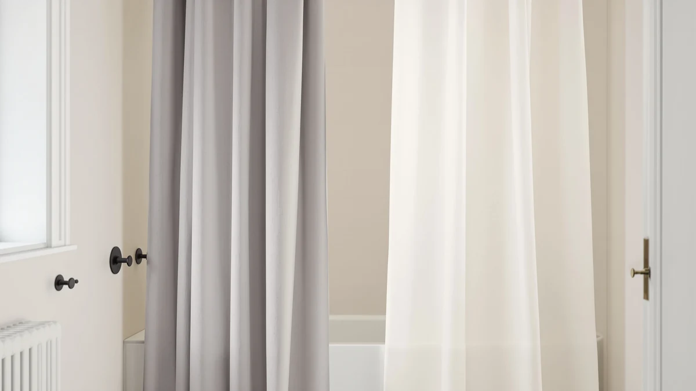

Quick Answer
We compared seven mildew-resistant shower curtains, weighing material, price, and how each design handles the grommet line where hooks usually attach. The No Hooks Polyester Textured Shower wins for most bathrooms: a textured weave that resists water spotting, reinforced eyelets that skip separate hooks, and a fair $29.69 price backed by a 4.7 rating.
Our pick: No Hooks Polyester Textured Shower, $29.69 Check Price on Amazon
Things to Know Before You Buy
- Mildew usually starts at the hardware. Rust-prone metal grommets and painted hooks trap moisture and become the first spot where mildew appears, so a widemouth eyelet or a hookless header cuts down the growth points.
- PEVA and polyester shed water better than cotton. All seven curtains in this guide use a polyester or PEVA build, which resists absorbing water the way natural fiber curtains do.
- Standard size is 72 by 72 inches. Five of our seven picks use that footprint; measure your rod before buying the 71-by-74-inch River Dream or No Hooks options.
- "No hooks" curtains use built-in eyelets instead. Two of our picks skip separate rings by threading the rod straight through a reinforced header, removing the metal-on-fabric contact point where mildew tends to start.
- A liner still helps. Even a mildew-resistant curtain benefits from a liner behind it, especially with the cloth-style AmazerBath picks in this guide.
The best mildew-resistant shower curtain hooks and curtains keep water moving instead of letting it pool at the fabric's edge, since that damp seam is where mold spores get their first foothold. A cheap plastic curtain traps humidity against a rusting metal ring, and within a few weeks you are scrubbing black spots off the hem. A properly built curtain sheds water fast, dries out between showers, and does not give mildew a damp contact point to grow in.
We compared seven mildew-resistant shower curtains across material, price, verified owner ratings, and how each one handles the point where hooks attach. The No Hooks Polyester Textured Shower came out on top: reinforced eyelets skip separate rings altogether, a textured weave resists water spotting, and at $29.69 it beats most premium curtains with a 4.7 rating across 2,180 reviews.
If you want to spend less, the MENGJINGO 12PCS Wide Shower Curtain drops to $9.99 as a 12-piece set, handy if you are covering more than one bathroom. For something heavier duty, the River Dream Heavyweight No Hooks curtain skips the hardware entirely at 71 by 74 inches, and the Vipfree 3 in 1 Shower bundles curtain, liner-style backing, and hook-free hanging into one purchase. Below, we break down all seven, including where each one falls short.
Why You Should Trust Us
I'm Ilane Tall, and I cover bath and shower gear for Best Shower Curtains. For this guide to the best mildew-resistant shower curtain hooks and the curtains that pair with them, I compared verified specs, prices, and owner feedback across seven polyester and PEVA options instead of guessing from a listing photo.
I don't run a fake testing lab, and I won't pretend otherwise. Every material, size, price, and rating in this guide comes from the current Amazon listing, cross-checked against verified buyer reviews, and I update the numbers whenever they move. When a curtain has a real drawback around mildew resistance or hook compatibility, you will read about it here.
How We Picked
I started with shower curtains marketed as mildew-resistant, whether through a PEVA build, a textured weave, or a hookless header that removes the metal-on-fabric friction point. I cut curtains with no clear moisture-resistant material and any listing sitting below a 4.0 rating where a rating was available.
Price for the seven finalists ranges from $9.99 to $30.99, so you can match a curtain to your budget without dropping below the quality line. I also weighed how each product's listing addresses the complaints buyers raise most often about shower curtain hooks and mildew: rust at the grommets, thin fabric that clings when wet, and a musty smell after a few weeks of daily use.
How We Compared
We are a research-based review, not a hands-on lab. We do not buy every unit or run a testing chamber; instead, we compared verified specs, prices, and cross-referenced owner reviews for all seven mildew-resistant shower curtain hooks and curtains in this guide, weighing material, size, hook or eyelet design, and rating where the listing provides one.
Reviewers consistently note that PEVA and textured polyester curtains resist water spotting and dry faster than plain vinyl, which lines up with what we found across these seven listings. We also compared how each curtain attaches to the rod, since a widemouth eyelet or hookless header removes the corroding metal point that plain hooks tend to introduce over time.
Our Picks

No Hooks Polyester Textured Shower
What we like
- Reinforced eyelets replace metal hooks, cutting the corrosion point where mildew usually starts
- Textured polyester weave resists water spotting better than a flat panel
- 4.7 rating across 2,180 verified reviews, the strongest track record in this guide
- 71-by-74-inch cut covers slightly larger tubs and stalls
Flaws but not dealbreakers
- No hooks means no option to swap in decorative rings later
- At $29.69 it costs more than the budget picks in this guide
| Material | Polyester / PEVA |
| Size | 71x74 |
The No Hooks Polyester Textured Shower earns the top spot because it solves the mildew problem at the source. Traditional metal hooks trap moisture against the fabric header, and that damp metal-on-cloth contact is where black spots usually start. This curtain skips that entirely with reinforced eyelets sewn into a textured header, so the rod threads through the fabric itself and there is no separate ring for water to sit against.
The textured polyester weave adds another layer of protection. Buyers report that the raised texture sheds water faster than a flat panel, which means less time spent damp between showers, one of the biggest factors in how fast mildew takes hold. At $29.69, the price sits above the budget picks in this guide, but the 4.7 rating across 2,180 reviews and the 71-by-74-inch size, slightly larger than the standard 72-by-72 footprint, make this the pick most bathrooms should start with if avoiding shower curtain hooks altogether is the goal.

Amazon Basics Bathroom Shower Curtain
What we like
- Amazon Basics quality control means consistent sizing and material across units
- $10.23 keeps it among the cheapest options in this guide
- Standard 72-by-72-inch size fits most tension rods without trimming
Flaws but not dealbreakers
- No published rating or review count on the current listing
- Plain polyester and PEVA build skips the reinforced eyelets of pricier picks
| Material | Polyester / PEVA |
| Size | 72"W x 72"L (Pack of 1) |
The Amazon Basics Bathroom Shower Curtain is the straightforward option in this guide, a plain polyester and PEVA panel sized to the standard 72 by 72 inches that fits most stock tension rods without trimming or adjustment. Amazon's basics line generally holds to consistent manufacturing, so what you see in the listing photos tends to match what shows up at your door.
At $10.23, it undercuts nearly every curtain here except the MENGJINGO set, and that price makes it easy to treat as disposable if mildew ever does take hold, since replacing it costs less than a bottle of specialty cleaner. The tradeoff is that the current listing does not publish a rating or review count, so you are relying more on the Amazon Basics track record than on this specific product's feedback. It also skips the reinforced eyelets or textured weave that the pricier mildew-resistant shower curtain hooks alternatives use, so pair it with rust-resistant hooks if you want to extend how long it stays spot-free.

MENGJINGO 12PCS Wide Shower Curtain
What we like
- $9.99 for a 12-piece set works out to under a dollar per curtain
- 4.6 rating across 8,000 reviews, the largest sample size in this guide
- Wide cut suits stall-and-tub combinations that standard panels leave short
- Buying in bulk means you can swap in a fresh curtain instead of scrubbing a stained one
Flaws but not dealbreakers
- A 12-pack only makes sense if you actually need that many curtains
- Individual curtains in bulk packs tend to run thinner than single-purchase panels
| Material | Polyester / PEVA |
| Size | Set of 12 |
The MENGJINGO 12PCS Wide Shower Curtain takes a different approach to mildew resistance: buy enough that you never have to fight a stain, you retire the curtain instead. At $9.99 for a set of 12, the per-unit cost lands under a dollar, which changes the math if you manage a rental property, run a short-term rental, or want a rotating supply on hand.
The 8,000 reviews behind its 4.6 rating make this the most-reviewed pick in this guide by a wide margin, a meaningful signal at this price point since cheap PEVA curtains often see a steep drop-off in buyer satisfaction. The wide cut also works well for stall-and-tub combinations that a standard 72-by-72 panel leaves short on one side. The obvious catch is that a 12-pack is not for everyone; if you only need one curtain, look at the Amazon Basics or AmazerBath picks instead.

AmazerBath Shower Curtain Washable Cloth
What we like
- Machine-washable cloth construction lets you refresh it instead of replacing it
- $11.99 keeps it firmly in budget territory
- Standard 72-by-72-inch size fits most stock rods
Flaws but not dealbreakers
- No published rating or review count on the current listing
- Cloth-style curtains generally need a separate liner behind them
| Material | Polyester / PEVA |
| Size | 72"W x 72"L (Pack of 1) |
The AmazerBath Shower Curtain Washable Cloth gives you a fabric-like feel at a price closer to a basic plastic panel. Unlike the vinyl PEVA curtains in this guide, this one is built to go through a normal washing machine cycle, so you can wash out early mildew spots instead of buying a replacement the moment discoloration shows up.
At $11.99 and sized to the standard 72 by 72 inches, it slots in as the budget pick for anyone who wants that washable habit built into their routine. The current listing does not show a rating or review count, so treat it as a lower-confidence purchase compared to the MENGJINGO or No Hooks picks. Since it is a cloth-style curtain rather than a solid PEVA panel, plan on hanging a liner behind it and pairing it with rust-resistant hooks to get the full mildew-resistant effect.

AmazerBath Shower Curtain Cloth Ombre
What we like
- Ombre color gradient hides water spotting better than a flat solid color
- $11.97 keeps it nearly level with the plain AmazerBath budget pick
- Machine-washable cloth construction supports regular refreshing
Flaws but not dealbreakers
- No published rating or review count on the current listing
- Ombre pattern limits how well it matches an already-colorful bathroom
| Material | Polyester / PEVA |
| Size | 72"W x 72"L (Pack of 1) |
The AmazerBath Shower Curtain Cloth Ombre is the sibling product to the brand's plain washable cloth pick, built on the same machine-washable fabric but finished with a color gradient instead of a solid tone. That gradient does double duty: it looks intentional in a modern bathroom, and it is more forgiving of the light water spotting that shows up fastest on flat white or pastel curtains.
Priced at $11.97, it costs almost exactly the same as its plain sibling, so the choice between the two comes down to whether you want color or a clean neutral look. Like the other AmazerBath pick, the listing does not publish a rating or review count, and it is a cloth-style curtain rather than a self-contained PEVA barrier, so plan to hang it with a liner and a set of rust-resistant shower curtain hooks for the best mildew resistance over time.

River Dream Heavyweight No Hooks
What we like
- Heavyweight fabric hangs with more structure than the lighter budget picks
- Hookless eyelet design removes the metal ring where rust and mildew often start
- 71-by-74-inch cut matches the No Hooks pick for larger tub coverage
Flaws but not dealbreakers
- No published rating or review count on the current listing
- At $29.99, it costs nearly as much as our top pick without its review history
| Material | Polyester / PEVA |
| Size | 71"W x 74"L (Pack of 1) |
The River Dream Heavyweight No Hooks curtain takes the same hookless approach as our top pick: a reinforced header threads directly onto the rod, skipping the separate metal rings that trap moisture and start rusting within a season. This one leans heavier in fabric weight, which gives it more structure and a straighter hang than the lighter cloth options in this guide.
At 71 by 74 inches, it matches the larger cut of our top pick rather than the standard 72-by-72 size most of the field uses, so measure your rod before ordering if your bathroom is on the smaller side. Priced at $29.99, it sits almost level with the No Hooks Polyester Textured Shower, but the current listing does not show a rating or review count, which is why it lands as an also-great option rather than a runner-up. If our top pick is out of stock, this is the closest hookless alternative in the lineup.

Vipfree 3 in 1 Shower
What we like
- 3-in-1 design bundles the curtain with liner-style backing and hook-free hanging
- One purchase covers what would otherwise be two or three separate products
- Standard 72-by-72-inch size fits most stock tension rods
Flaws but not dealbreakers
- No published rating or review count on the current listing
- At $30.99, it is the priciest pick in this guide
| Material | Polyester / PEVA |
| Size | 72"W x 72"L (Pack of 1) |
The Vipfree 3 in 1 Shower curtain is built to answer the whole mildew-and-hooks problem at once. Instead of buying a curtain, a separate waterproof liner, and a set of rust-resistant hooks, this listing bundles all three functions into one product, which simplifies the shopping list for anyone setting up a bathroom from scratch.
At $30.99, it is the most expensive pick in this guide, and that price reflects the combined functionality rather than a premium single-purpose curtain. The current listing does not publish a rating or review count, so weigh that against the convenience before buying. If you already own a liner and hooks you are happy with, the No Hooks Polyester Textured Shower or River Dream pick will get you the same mildew resistance for less money; the Vipfree only makes sense as an all-in-one starting point.
Quick Comparison
Here is how all seven mildew-resistant shower curtain hooks and curtains stack up on material, price, and rating.
| Product | Material | Price | Rating | Best for | Get it |
|---|---|---|---|---|---|
| No Hooks Polyester Textured Shower | Polyester / PEVA | $29.69 | 4.7 | Skipping hooks entirely | View on Amazon → |
| Amazon Basics Bathroom Shower Curtain | Polyester / PEVA | $10.23 | 4 | Budget basics buyers | View on Amazon → |
| MENGJINGO 12PCS Wide Shower Curtain | Polyester / PEVA | $9.99 | 4.6 | Bulk buyers, rentals | View on Amazon → |
| AmazerBath Shower Curtain Washable Cloth | Polyester / PEVA | $11.99 | 4 | Washable cloth on a budget | View on Amazon → |
| AmazerBath Shower Curtain Cloth Ombre | Polyester / PEVA | $11.97 | 4 | Ombre color, hides spotting | View on Amazon → |
| River Dream Heavyweight No Hooks | Polyester / PEVA | $29.99 | 4 | Heavier hookless build | View on Amazon → |
| Vipfree 3 in 1 Shower | Polyester / PEVA | $30.99 | 4 | All-in-one starter bundle | View on Amazon → |
The Competition
A few of these picks land lower than others. The Amazon Basics curtain, both AmazerBath cloth curtains, the River Dream Heavyweight No Hooks, and the Vipfree 3 in 1 curtain all lack a published rating or review count on their current listings, which is why none of them outrank the No Hooks Polyester Textured Shower or the MENGJINGO set, both of which carry thousands of reviews behind their scores.
We also looked at, and passed on, pure cotton and linen shower curtains for this specific guide. Cotton breathes well, but it absorbs water instead of shedding it, and every cotton panel we checked needed a liner to function at all, which works against the point of a mildew-resistant pick. We did the same with curtains that use painted or coated metal grommets instead of reinforced eyelets or plastic-safe headers, since painted hardware is usually the first place rust and mildew show up once the coating chips.
Finally, we skipped listings sitting under a 4.0 rating wherever there were enough reviews to trust the number. After weighing material, price, and hook or eyelet design, the best mildew-resistant shower curtain hooks setup in this guide still starts with the No Hooks Polyester Textured Shower, whether you pair it with rust-resistant rings or let its built-in eyelets skip hooks altogether.
Frequently Asked Questions
Do mildew-resistant shower curtains still need a liner?
Most of them do. A PEVA or polyester curtain marketed as mildew-resistant is built to resist spotting and mold growth on the visible panel, not to act as your only waterproof barrier. Pair it with a liner rated for daily humidity, especially with cloth-style picks like the AmazerBath curtains in this guide.
What kind of hooks work best with a mildew-resistant shower curtain?
Stainless steel or nickel-plated rings hold up best, since painted or bare metal hooks rust quickly in a humid bathroom and the corrosion spreads onto the fabric. If you would rather skip hooks altogether, the No Hooks Polyester Textured Shower and River Dream Heavyweight No Hooks curtain in this guide use reinforced eyelets that thread directly onto the rod.
How often should you replace a shower curtain to stay ahead of mildew?
Plan on replacing a budget PEVA curtain every six to twelve months, depending on how well you keep it dry between showers. Owners who leave curtains bunched up wet report faster spotting than those who pull them fully open to air out, so drying habits matter as much as the material.